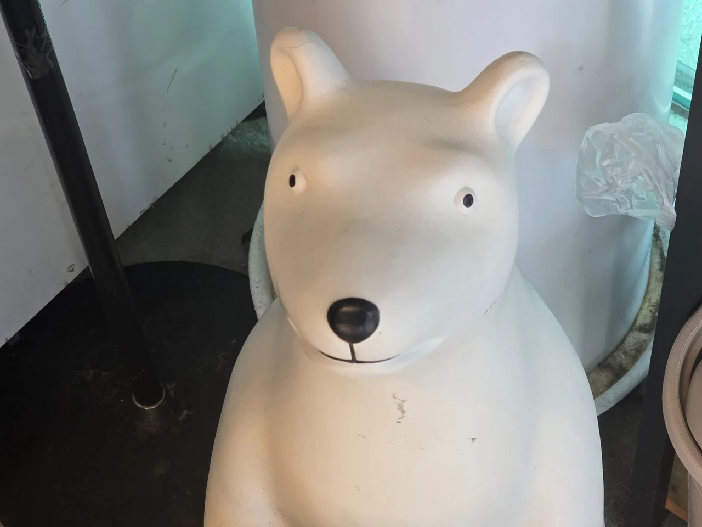
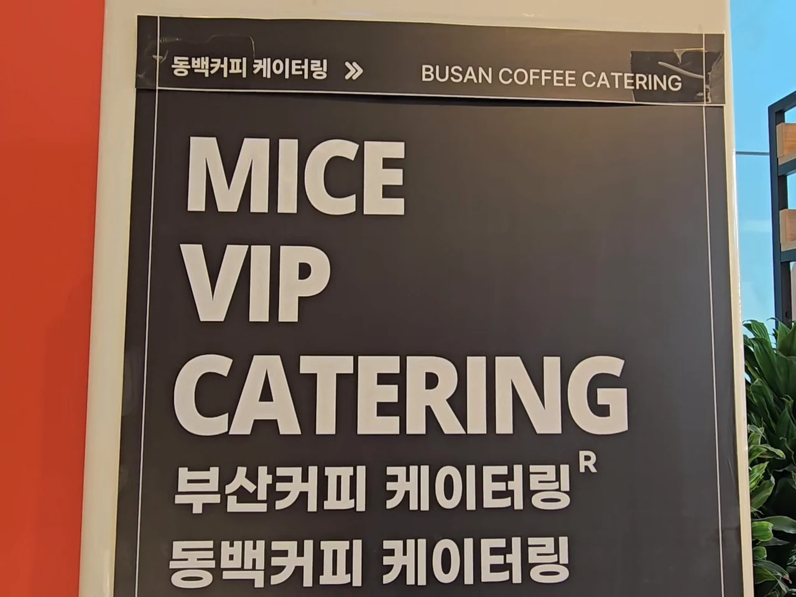
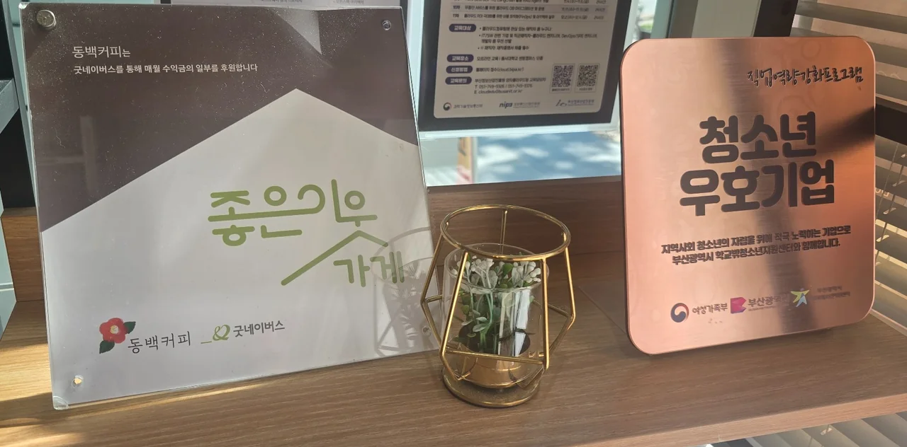
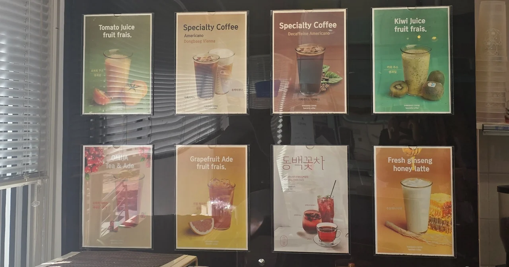
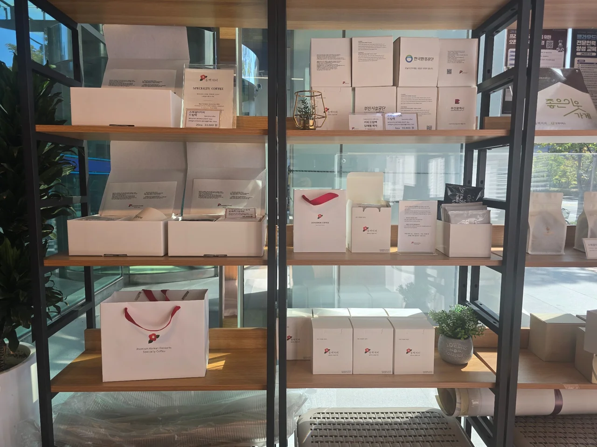

동백커피 홍보영상
홍보영상
프로젝트 개요Overview
동백커피 센텀시티점을 소개하는 홍보영상입니다. 말장난에서 시작된 한파가 전 세계로 퍼지고, 추위에 익숙한 북극곰마저 따뜻한 커피를 찾게 된다는 이야기를 담았습니다.
담당 작업Role
영상 기획과 시나리오 작성, 매장 촬영, AI 영상 소스 제작 및 편집을 진행했습니다. 매장 촬영분은 대부분 직접 촬영했으며, 커피를 만들고 추출하는 장면은 함께 촬영을 진행한 분이 제공한 영상 소스를 사용했습니다.
제작 목적Purpose
실제로 운영 중인 매장의 홍보영상을 제작하고자 동백커피 센텀시티점의 협조를 받아 촬영을 진행했습니다. 단순히 매장과 음료를 소개하는 데 그치지 않고, 동백커피만의 특징과 가치를 영상에 담고 싶었습니다.
제작 과정에서의 고민Process
생각보다 매장이 협소했고, 매장 내부의 모습만으로는 영상의 이야기를 구성하기에 소재가 부족했습니다. 무엇을 영상에 담으면 좋을지 고민하며 촬영 전날까지 매일 매장을 찾았습니다.
매장을 방문해 음료를 마시고 매장의 특징을 관찰하는 한편, 인터넷을 통해 동백커피라는 브랜드와 사업 내용에 대한 정보도 수집했습니다. 이 과정에서 북극곰 모양의 쓰레기통과 매장 냉장고에 붙어 있던 케이터링 서비스 안내문을 발견했고, 두 가지 모두 영상의 아이디어로 이어졌습니다.
음료의 콘셉트와 사용되는 재료, 브랜드가 추구하는 가치를 살펴보면서 세 가지 키워드를 정했습니다.
지역 특산품을 활용한 건강한 음료 · 사회를 생각하는 브랜드 · 따뜻한 휴식 공간
현장 조사 자료





기획 방향의 결정Decisions
이러한 키워드를 바탕으로 영상의 기획 방향을 크게 두 가지로 나누었습니다.
첫 번째 — 실제 판매 중인 도라지 차를 중심으로 음료의 특징과 장점을 소개하는 방식이었습니다.
두 번째 — 매장에서 느낀 인상과 브랜드의 가치를 압축해, 특별한 커피를 소재로 기억에 남는 이야기를 만드는 방식이었습니다.
저는 두 번째 방식을 선택했습니다. 각각의 요소를 직접 설명하기보다는 하나의 재미있는 이야기 속에 자연스럽게 녹여내고 싶었습니다.
스토리 기획Story
먼저 사람들이 어떤 상황에서 커피를 찾게 될지 생각해 보았습니다. 날씨가 추울 때, 혹은 휴식이 필요할 때를 떠올렸고, 추위와 휴식을 어떤 이미지로 표현할 수 있을지 고민했습니다.
‘밖은 춥지만 동백커피는 따뜻한 곳’이라는 이미지를 전달하기로 결정한 뒤, 이를 뒷받침할 이야기의 배경을 만들었습니다.
평범한 가을 날씨에 갑자기 찾아온 이상 한파가 전 세계를 뒤덮는 시나리오를 구상했습니다. 여기에 한파의 원인이 사실은 사소한 말장난이었다는 다소 어이없는 설정을 더했습니다.
이왕 과장할 거라면 제대로 과장해 보자는 생각이 들었습니다. 마침 매장에서 보았던 북극곰 모양의 쓰레기통이 떠올랐고, 추위에 익숙한 북극곰조차 따뜻한 커피를 찾게 된다는 설정으로 이야기의 주인공을 정했습니다.
여기에 매장 냉장고에 붙어 있던 케이터링 서비스 안내문에서 얻은 아이디어를 더했습니다. 고객이 원한다면 북극까지도 찾아가지 않을까 하는 재미있는 상상에서 출발해 북극에 동백커피 직원을 등장시켰습니다. 실제로 제공하는 서비스를 직접적으로 설명하기보다는 이야기 속에 자연스럽게 녹여내고 싶었습니다.
AI 활용 범위AI Usage
AI가 도운 부분 — 구글 Flow의 Veo 3.1을 활용해 한파와 북극곰 등 실제로 촬영하기 어려운 장면을 제작했습니다.
직접 한 부분 — 매장 방문과 촬영, 전체 기획과 시나리오 작성, 장면 구성 및 영상 편집을 진행했습니다. AI로 제작한 장면에 직접 촬영한 영상과 제공받은 촬영 소스를 함께 사용했습니다.
회고Retrospective
당시에는 영상 제작 AI 서비스의 구독을 고민하고 있던 시점이라 구글 Flow의 무료 제공량을 활용해 작업했습니다. 제한된 제작 환경에서 원하는 장면을 구현하는 데 어려움이 많았습니다.
그럼에도 이야기의 전체적인 흐름과 유머가 제 취향에 잘 맞았기에 작업하는 내내 즐거웠습니다. 매장의 특징을 직접 설명하지 않고도 하나의 이야기로 풀어낼 수 있다는 점에서 재미를 느낀 작업이었습니다.